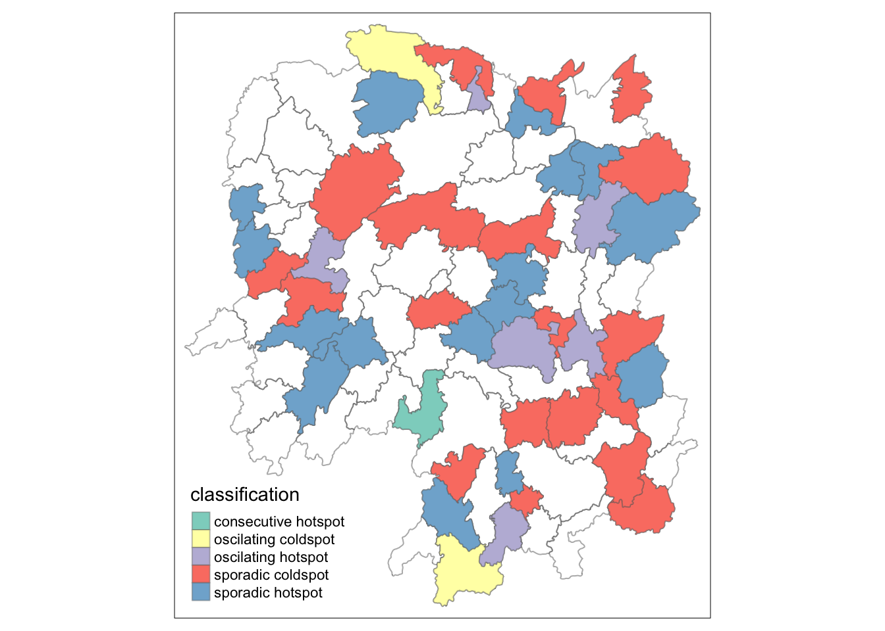

pacman::p_load(tmap,sf,sfdep,tidyverse,knitr, plotly,zoo,kendall)In-class Exercise 2:
Getting Started
The Data
Importing the data
Hunan, a geospatial data set in ESRI shapefile format
Hunan_2012, an attribute data set in csv format
hunan <- st_read(dsn = "data/geospatial", layer = "Hunan")Reading layer `Hunan' from data source
`/Users/youting/ytquek/ISSS624/In-class Exercise/In-class Exercise 2/data/geospatial'
using driver `ESRI Shapefile'
Simple feature collection with 88 features and 7 fields
Geometry type: POLYGON
Dimension: XY
Bounding box: xmin: 108.7831 ymin: 24.6342 xmax: 114.2544 ymax: 30.12812
Geodetic CRS: WGS 84hunan2012 <- read_csv("data/aspatial/Hunan_2012.csv")Combine both data frames
hunan_GDPPC <- left_join(hunan,hunan2012) %>%
select(1:4, 7, 15)Computing Contiguity Spatial Weights
Use poly2nb() of spdep package to compute contiguity weight matrices for the study area. This function builds a neighbours list based on regions with contiguous boundaries. Note: A “queen” argument taking TRUE/FALSE option can be passed. Default is set to TRUE.
Computing (QUEEN) contiguity based neighbours
wm_q <- hunan_GDPPC %>%
mutate(nb = st_contiguity(geometry),
wt = st_weights(nb, style = "W"),
.before = 1)Global Spatial Autocorrelation
Compute global spatial autocorrelation statistics and to perform spatial complete randomness test for global spatial autocorrelation.
Computing local Moran’s I
Local Moran’s I of GDPPC at country level
lisa <- wm_q %>%
mutate(local_moran = local_moran(
GDPPC, nb, wt, nsim = 99),
.before = 1) %>%
unnest(local_moran)Time Series Cube
GDPPC <- read_csv("data/aspatial/Hunan_GDPPC.csv")GDPPC_st <- spacetime(GDPPC, hunan,
.loc_col = "County",
.time_col = "Year")
is_spacetime_cube(GDPPC)[1] FALSEGDPPC_nb <- GDPPC_st %>%
activate("geometry") %>%
mutate(nb = include_self(st_contiguity(geometry)),
wt = st_inverse_distance(nb,geometry,
scale = 1,
alpha=1),
.before = 1) %>%
set_nbs("nb") %>%
set_wts("wt")Computing Gi*
gi_stars <- GDPPC_nb %>%
group_by(Year) %>%
mutate(gi_star = local_gstar_perm(
GDPPC, nb, wt)) %>%
tidyr::unnest(gi_star)Emerging Hot Spots
ehsa <- emerging_hotspot_analysis(
x = GDPPC_st,
.var = "GDPPC",
k = 1,
nsim = 99
)
hunan_ehsa <- hunan %>%
left_join(ehsa,
by = join_by(County==location))Visualising the distribution of EHSA classes
ehsa_sig <- hunan_ehsa %>%
filter(p_value < 0.05)
tmap_mode("plot")
tm_shape(hunan_ehsa) +
tm_polygons +
tm_borders(alpha = 0.5) +
tm_shape(ehsa_sig) +
tm_fill("classification") +
tm_borders(alpha = 0.4)